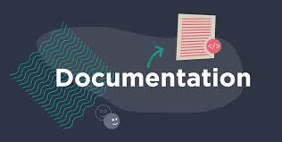

Le Wiki peut être utilisé comme un outil de base en conduite de projet dans le cadre d'une démarche naturellement coopérative. C'est là son principe. Chacun peut donner son point de vue, compléter ou corriger un avis précédemment déposé. Dans tous les cas, l'historique global est conservé et la consultation, ou le retour à une version antérieure, est immédiate.
Le Wiki peut être utilisé comme un outil de base en conduite de projet dans le cadre d'une démarche naturellement coopérative. C'est là son principe. Chacun peut donner son point de vue, compléter ou corriger un avis précédemment déposé. Dans tous les cas, l'historique global est conservé et la consultation, ou le retour à une version antérieure, est immédiate. Cet outil sera utilisé à profit, notamment pour l'élaboration des documents de travail, dès les premières ébauches, afin de permettre aux principales personnes concernées de prendre une part active aux débats.
Réussir un projet d'entreprise, complexe de nature, c'est avant tout maitriser l'art de dynamiser le relationnel entre les femmes et les hommes du projet. Ce n'est sûrement pas en devenant un obsédé des méthodes et des procédures que l'on y parvient. Les méthodes et outils sont nécessaires mais ils sont insuffisants si on ne sait pas utiliser son bon sens et si on hésite à développer le goût de la création en commun. Ce livre présente, explique et illustre les douze bonnes pratiques pour manager les projets d'entreprise en conservant en ligne de mire l'importance d'un management "humain"
Le document de travail doit être réécrit régulièrement, afin de conserver une forme utilisable, en intégrant l'ensemble des modifications apportées. Ce n'est pas très "style Wiki", mais c'est la manière la plus efficace d'exploiter l'outil. Ce travail de rédaction mérite d'être réalisé par un consultant extérieur à l'entreprise qui, de son regard moins impliqué, révèlera les non-dits et les contre-sens.
La participation est étendue, tous les points sont éclairés, les documents fondamentaux consensuels sont rapidement élaborés. L'outil est fédérateur.
Cette démarche nécessite un apprentissage de l'outil non pas uniquement dans son maniement purement technique, mais surtout dans sa logique qui permet de modifier, corriger, compléter les textes d'autrui, ou encore constater que ses propres textes sont amendés. D'expérience, cet apprentissage est en fait relativement aisé dans les structures qui se sentent prêtes à un fonctionnement en mode coopératif. Pour les autres, le produit n'est pas adapté.
Classiquement, la conduite efficace d'un projet se résume à la recherche de la maximisation du triptyque Qualité - Maîtrise des Délais - Maîtrise des Coûts. À juste titre, les plus avertis ajoutent la Maîtrise des risques à ce traditionnel triangle. Mais ce n'est pas encore suffisant. Les projets d'entreprise sont des projets complexes. L'accession à ces 4 objectifs ne sera guère possible sans s'assurer de la totale coopération de l'ensemble des partenaires du projet. D'autre part, les projets actuels sont nécessairement innovants.